南京大学校名
南京大学校名
This is the first Web page that I created.
It is still under building and its main aim is to help me learn HTML CSS and Javascript.
This is how we make a word bold.
This is how we make a word italic.
An example of sup: E = MC2.
An example of sub: CO2.
An example of line break:
An example of horizontal rule is in address
This is an example of strong.
This ia an example of emphasis.
This is an example of quotation.
This is an example of abbreviation: NBA
An example of citation: The old man an the sea.
An example of definition: E=MC2.
This is an example of ins and del.
This is an example of s.
有序列表
南京大学校标
南京大学校名
南京大学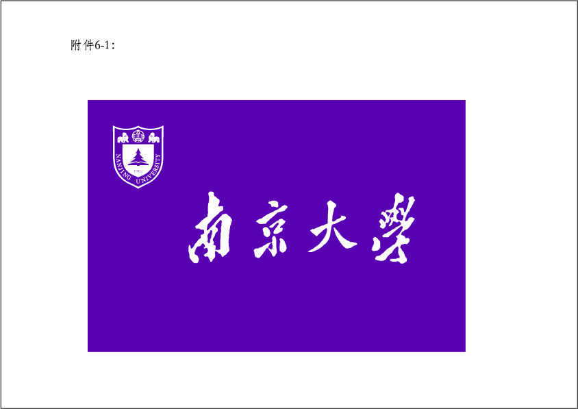校旗
图像的水平对齐：
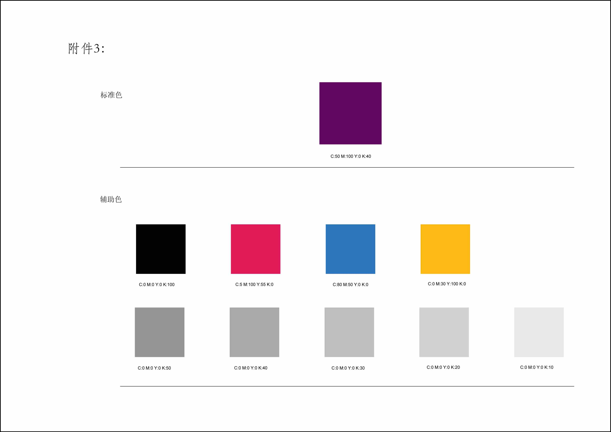 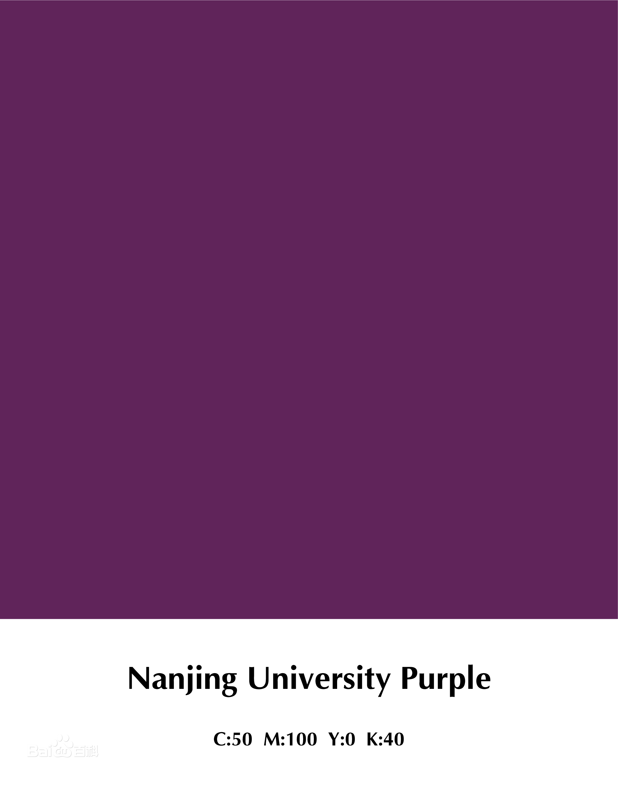 中文名：南大紫；外文名：Nanjing University Purple： 实质：南京大学标准色；色值：C50M100Y0K40 / R106G0B95；启用时间：2011年9月1日 南大紫是南京大学确定的标准色，CMYK色值（C50M100Y0K40）2010年南京大学将紫色作为学校标准色，即“南大紫”。 南京大学在国立中央大学时校色为紫金二色，加之松青，故依据传统当为紫、金、青三色。紫、金两色。 紫色象征典雅、高贵和浪漫；金色象征光明、辉煌和智慧。 南大紫，彰显了南京大学尊重历史、崇尚文化、尊重传统、崇尚科学的精神。 同时紫金山是南京的象征，校庆标识融入“南京元素”，表明了南京大学服务社会、奉献社会的使命意识和担当意识。 紫色是南京大学的标准色，也是南大学生日常生活的主色调，故而有了“南大紫”的说法。
图像的垂直对齐：看起来十分鸡肋，且已经被淘汰，略。
南京大学视觉形象规范化标准：
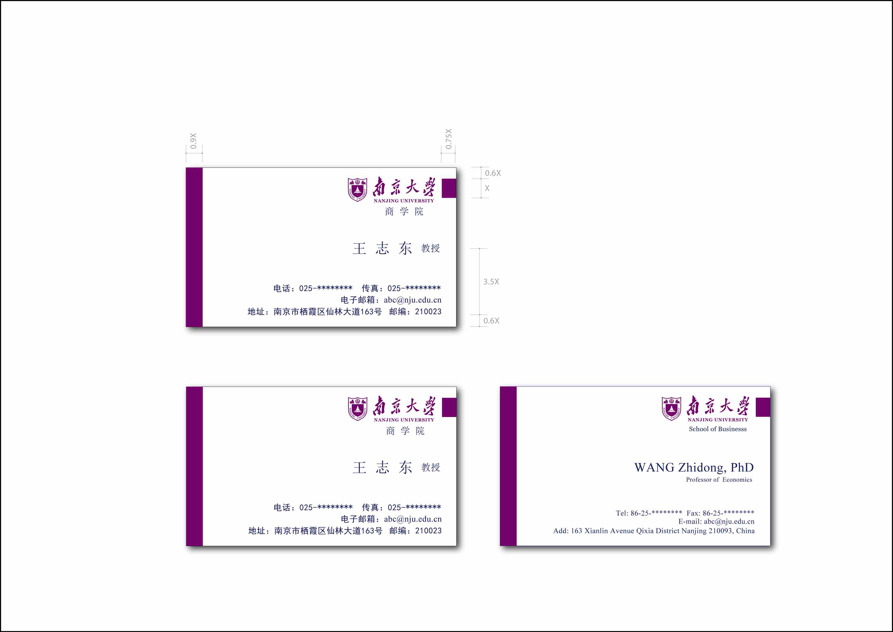
 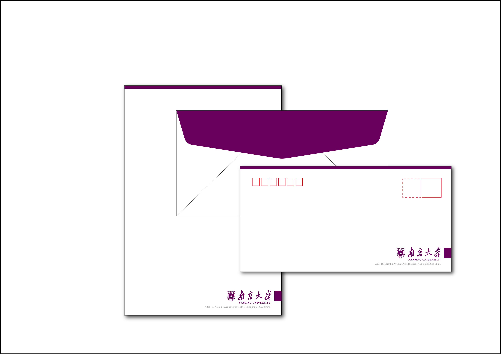
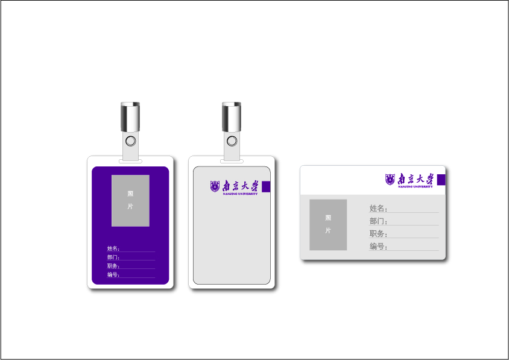
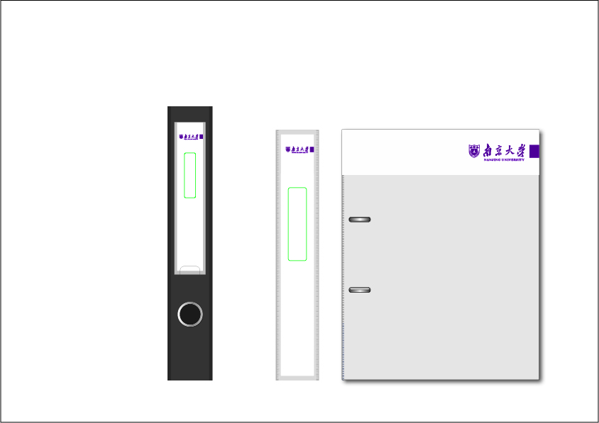
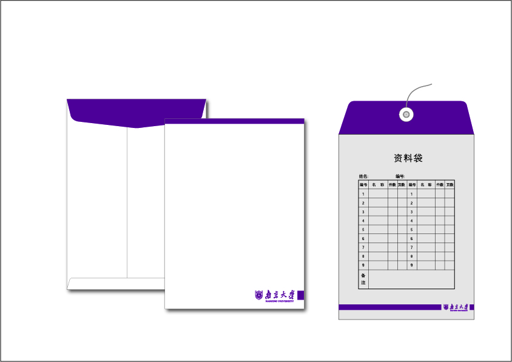
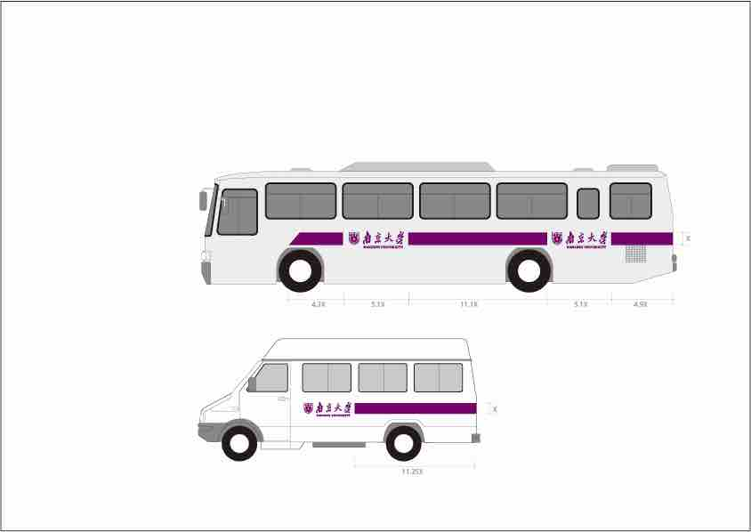
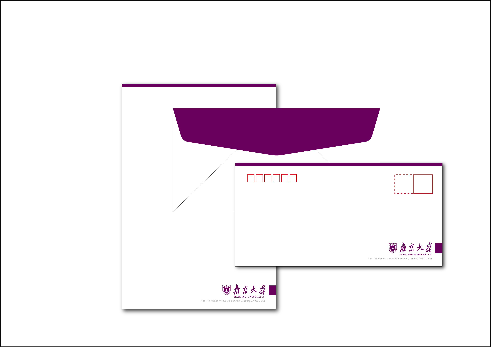
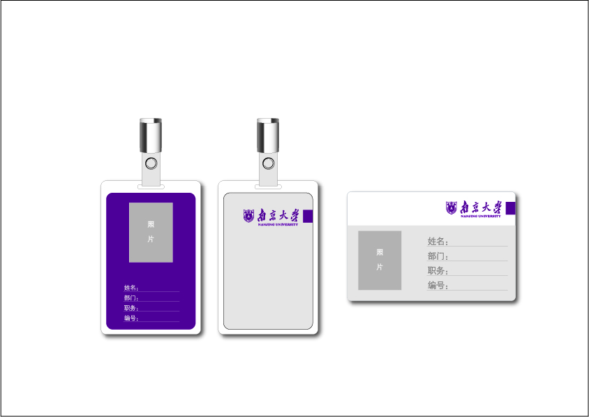
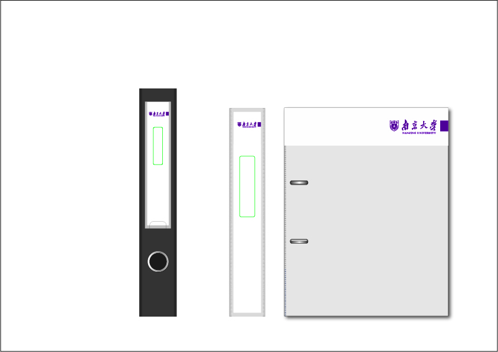
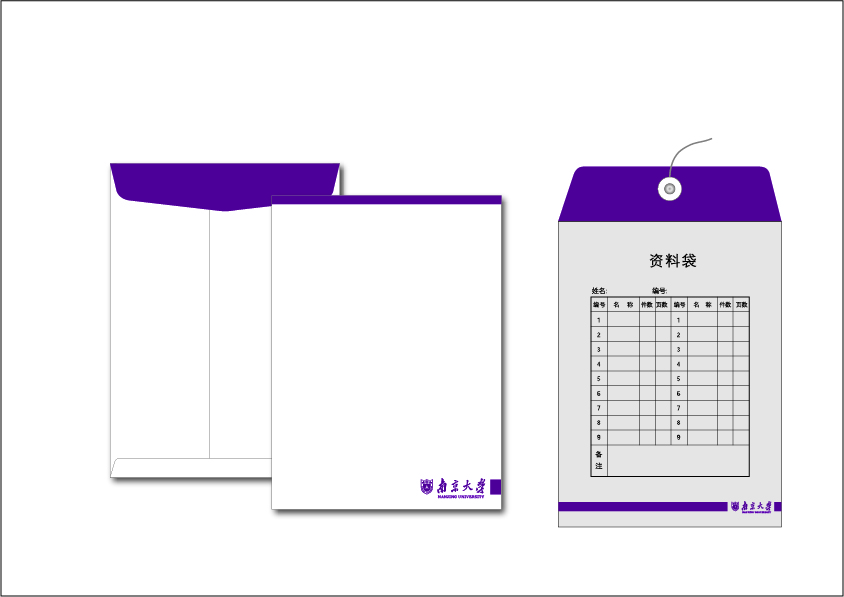
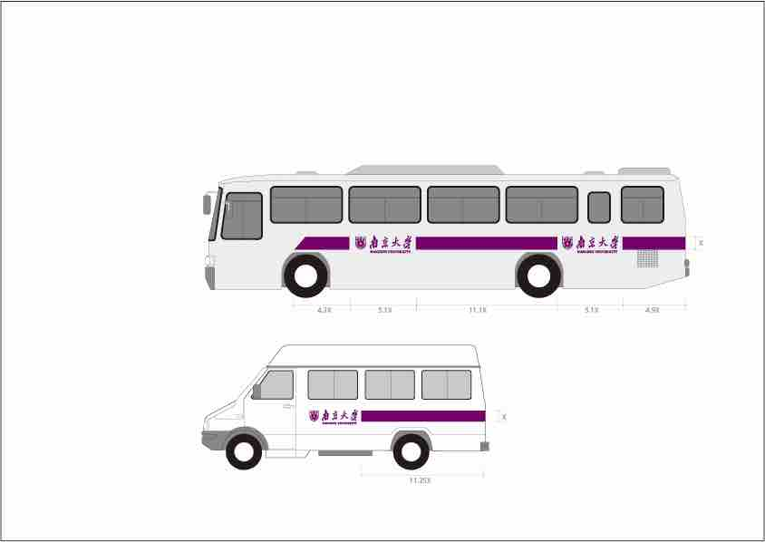
| 1 | 2 | 3 |
| 4 | 5 | 6 |
| 7 | 8 | 9 |
| Score | Rebound | Assist | |
|---|---|---|---|
| Stephen Curry | 38 | 5 | 12 |
| Lebron James | 30 | 12 | 10 |
此处的跨行与跨列无法直接显现出，后续可借助 CSS 添加边框
| ABC | BBC | CNN | |
|---|---|---|---|
| 6pm - 7pm | Baseball | Comdy | TV Show |
| 7pm - 8pm | News | ||
| 8pm - 9pm | Movie | NBA | NCAA |
| 9pm - 10pm | NHL | Football | |
常用HTML标签的英文全称及简单描述
| HTML标签 | 英文全称 | 中文释义 |
|---|---|---|
| a | Anchor | 锚 |
| abbr | Abbreviation | 缩写词 |
| acronym | Acronym | 取首字母的缩写词 |
| address | Address | 地址 |
| alt | alter | 替用(一般是图片显示不出的提示) |
| b | Bold | 粗体（文本） |
| bdo | Direction of Text Display | 文本显示方向 |
| big | Big | 变大（文本） |
| blockquote | Block Quotation | 区块引用语 |
| br | Break | 换行 |
| cell | cell | 巢 |
| cellpadding | cellpadding | 巢补白 |
| cellspacing | cellspacing | 巢空间 |
| center | Centered | 居中（文本） |
| cite | Citation | 引用 |
| code | Code | 源代码（文本） |
| dd | Definition Description | 定义描述 |
| del | Deleted | 删除（的文本） |
| dfn | Defines a Definition Term | 定义定义条目 |
| div | Division | 分隔 |
| dl | Definition List | 定义列表 |
| dt | Definition Term | 定义术语 |
| em | Emphasized | 加重（文本） |
| font | Font | 字体 |
| h1~h6 | Header 1 to Header 6 | 标题1到标题6 |
| hr | Horizontal Rule | 水平尺 |
| href | hypertext reference | 超文本引用 |
| i | Italic | 斜体（文本） |
| iframe | Inline frame | 定义内联框架 |
| ins | Inserted | 插入（的文本） |
| kbd | Keyboard | 键盘（文本） |
| li | List Item | 列表项目 |
| nl | navigation lists | 导航列表 |
| ol | Ordered List | 排序列表 |
| optgroup | Option group | 定义选项组 |
| p | Paragraph | 段落 |
| pre | Preformatted | 预定义格式（文本 ） |
| q | Quotation | 引用语 |
| rel | Reload | 加载 |
| s/ strike | Strikethrough | 删除线 |
| samp | Sample | 示例（文本 |
| small | Small | 变小（文本） |
| span | Span | 范围 |
| src | Source | 源文件链接 |
| strong | Strong | 加重（文本） |
| sub | Subscripted | 下标（文本） |
| sup | Superscripted | 上标（文本） |
| td | table data cell | 表格中的一个单元格 |
| th | table header cell | 表格中的表头 |
| tr | table row | 表格中的一行 |
| tt | Teletype | 打印机（文本） |
| u | Underlined | 下划线（文本） |
| ul | Unordered List | 不排序列表 |
| var | Variable | 变量（文本） |
Email
Created by ZYZ.